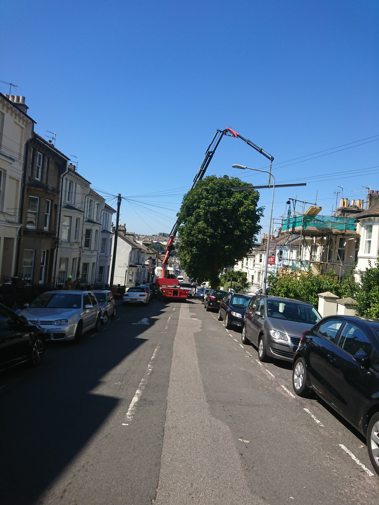
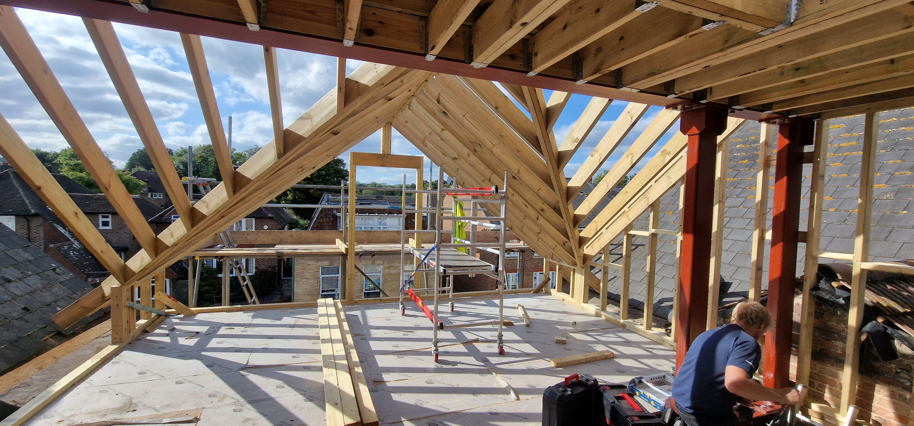
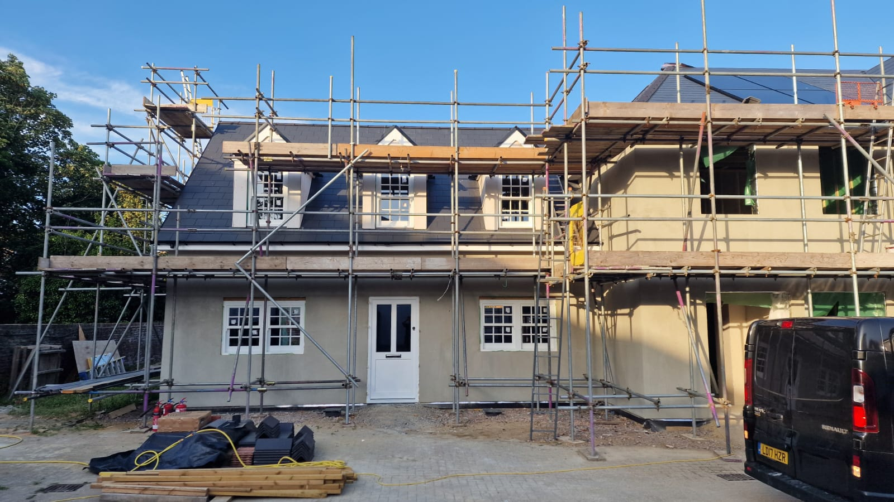
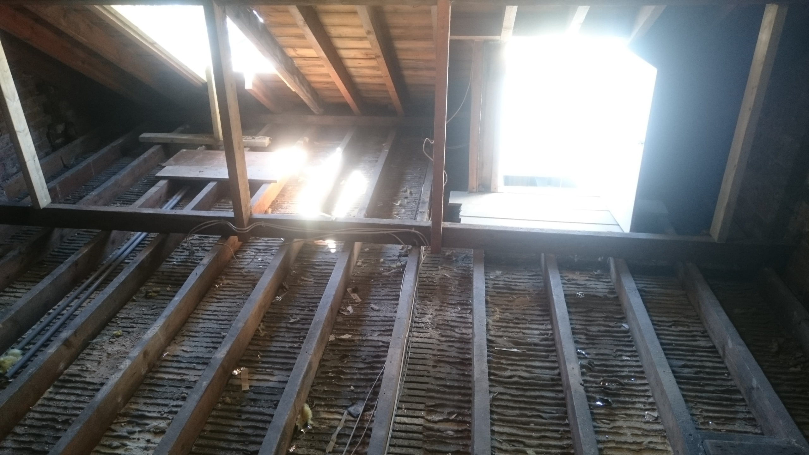
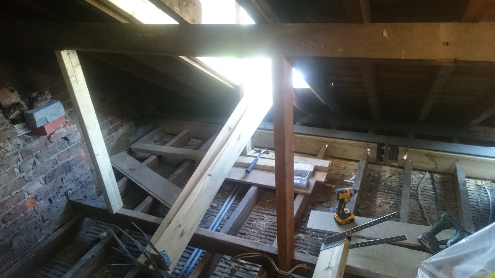
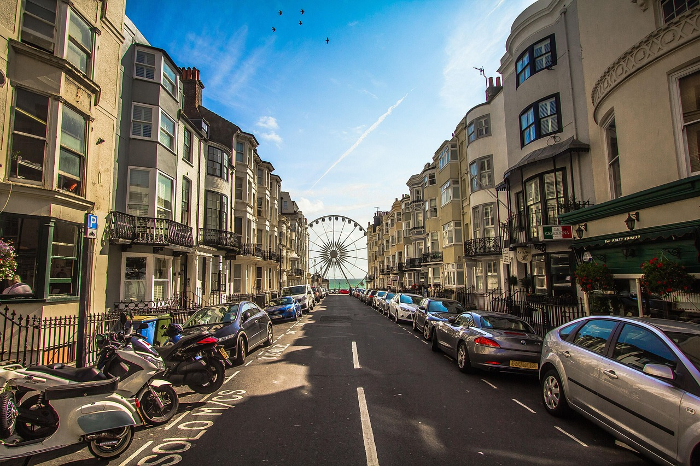
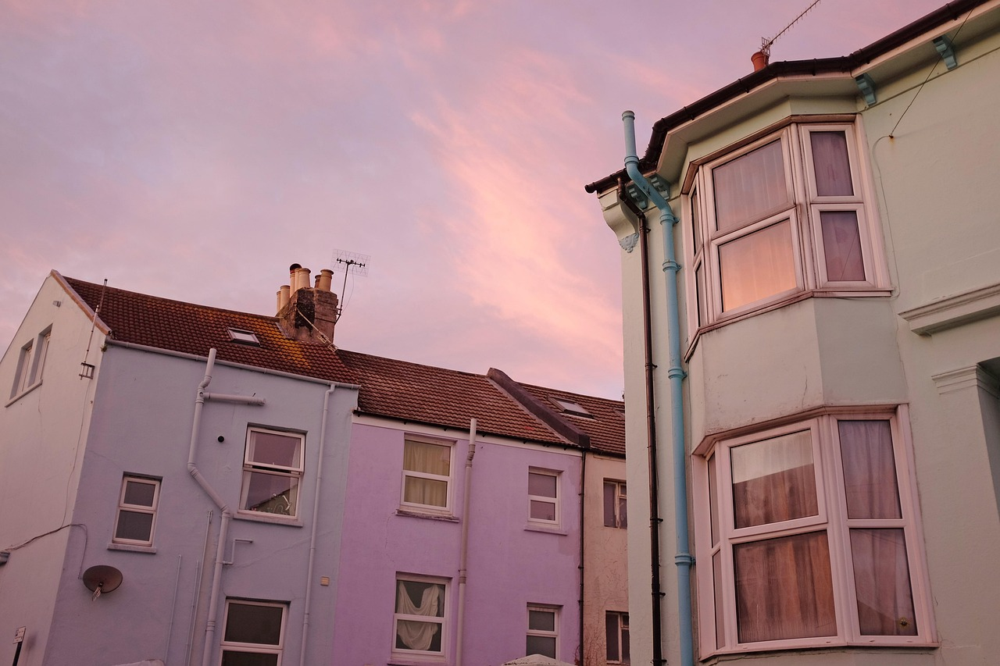
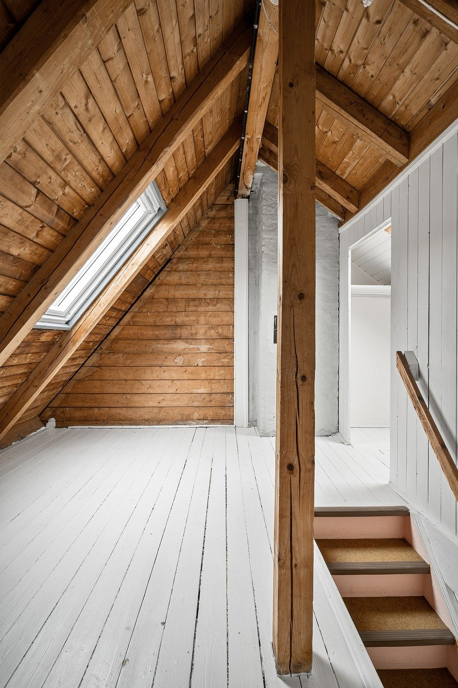

Bespoke Craftsmanship from ARC Sussex Carpentry
Loft conversions across Brighton and Sussex offer a smart way to unlock your home's potential. Whether you're in a Victorian terrace in Brighton, a seaside property in Worthing, or a modern build in Hassocks, ARC Sussex Carpentry brings decades of master craftsmanship and regional insight to every project. We combine tailored design, precise joinery, and a stress-free build process to deliver a loft conversion that reflects your lifestyle and adds lasting value.
OUR LOFT CONVERSION WORK
Craftsmanship from Structure to Finish





YOUR LOCAL MASTER CARPENTERS
Loft Conversions Tailored to Brighton Homes
From steep Victorian terraces to conservation-zone townhouses, loft conversions in Brighton present unique challenges. At ARC Sussex Carpentry, we're experienced in crafting tailored solutions that honour each property's structure, setting, and story.



ARC SUSSEX CARPENTRY
A Complete Build from Concept to Completion
Our projects run on tight schedules and are inspected at each stage to ensure structural integrity and compliance with British standards. Whether you live in the home during the build or not, we minimise disruption so you can carry on with daily life.
Once your space is watertight, insulated, and structurally secure, we move to finishing— fitting lighting, flooring, and fixtures that make your new room feel complete.
FINISHING DETAILS
Finishing Touches That Define Your Loft
We offer a range of finish options—carpets, timber floors, period mouldings, downlighting, bespoke shelving, and fitted wardrobes—so your loft conversion is tailored to how you live.
After handover, our team is available for any adjustments or finishing details you'd like to refine.
LOFT CONVERSIONS BRIGHTON AND SUSSEX
Understanding Loft Conversion Costs in Brighton & Sussex
We believe in being upfront. The final cost of your loft conversion depends on:
- Home type (e.g. detached vs. terrace)
- Loft size (usually 150-300 sq ft)
- Conversion type (Velux, Dormer, Mansard, Hip-to-Gable)
- Planning requirements (especially in conservation areas)
- Finish level (standard, high-end, or bespoke)
Most builds take 8-12 weeks, with some larger or conservation-based projects requiring longer.
Pro Tip: Budget an additional 10% for unforeseen extras (e.g. extra structural steel, rewiring, pipe relocations).
LOFT CONVERSIONS ACROSS SUSSEX
Beyond Brighton: Sussex Loft Conversions
We proudly serve homes across Sussex—from Worthing and Shoreham to Hassocks, Lewes and Hove. Each area brings its own regulations and styles. Our team has the regional know-how to handle both modern developments and heritage properties with care.
Whether it's a Dormer in Worthing or a Mansard in Hassocks, ARC Sussex Carpentry delivers loft conversions that add genuine long-term value—beautifully built, practically designed, and crafted to last.
See the Areas We Cover
Let's Create Your Ideal Loft Space
Book a free consultation with ARC Sussex Carpentry to explore the best approach for your loft conversion in Brighton or wider Sussex.
With clear timelines, creative design and reliable craftsmanship, we'll help you unlock a whole new floor of your home—stress-free.
Contact us today for a free quote or consultation